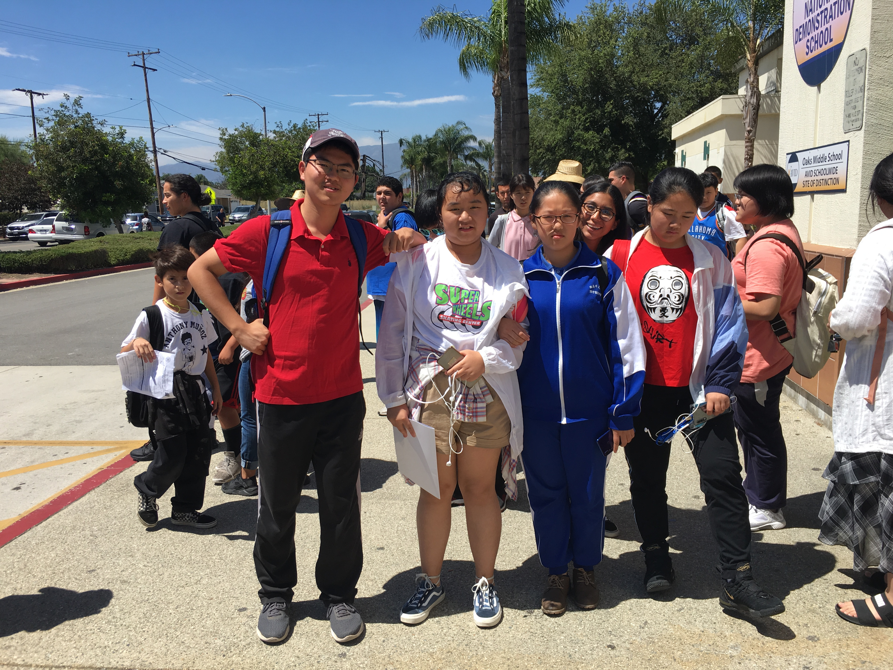
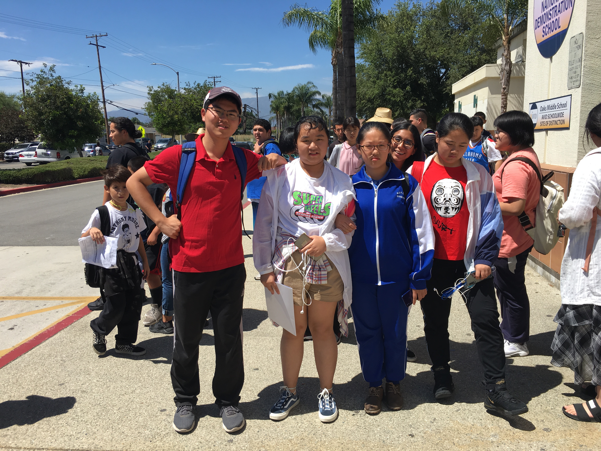
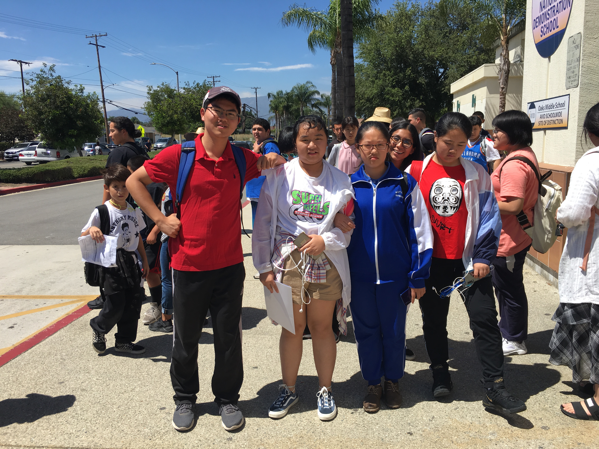

Tianzhao Han
I have worked as a summer camp photographer and interpreter for two months. My primary job was to translate words for the Internation Students from China and take pictures of them. At the end of the day, I would make a short video of their daily activities and upload it to their parents and teachers.
The Chinese studentse had a foreign ambassador to accompany them. In other words, each Chinese student was paired with an American student. With this, the Chinese students wouldnt be staying with each other and speak Chinese only. After all, they were here to learn English. Most of them had a really good time, in which half of them was helped by me. I helped them translate each other's words so that they could understand each other better. It was a really fun job to work, since I loved seeing kids getting along with each and smiling happily. Making videos of their day was a bit challenging at first, but after a few days, I got used to it and made some really quality videos. The hardest part was actually keeping an eye on the students and making sure they wouldn't be lost.
I have been the President of the Ping Pong Club of San Dimas High School for 2 years. I started the club and recruited a dozen members, therefore, I trained them to become better in skills. In the beginning, I had a hard time getting a ping pong table, but thanks to my best friend's gracious help of offering me one, the club was officially established. Then, it came the teaching part. Most of the students had no idea how to hit the ball properly. Therefore, I had to break down the steps and make things really simple for them. It was challenging to coach, but I managed to do it. After all, I created this club to spread the job of playing ping pong. I was proud of my club, and all of my members.
I volunteered in the San Dimas Library for two summers. My primary job was to register the students to the Summer Reading Program, where they got prizes by reading for a few hours in the library. I also helped them find books that they were looking for. At first, I had a hard time understanding my job, that whenever a student came to me, I had trouble speaking properly. As I got used to seeing more students, I could do a better job of introducing them to the Summer Reading Program. I was happy that I wasn't afraid of speaking to new people anymore!
Experience
Translator, Video Editer, and Teacher
• Kanghui International Agency
• San Dimas Library
• San Dimas High School
Librarian
• Responsible for registering students for Summer Readinng Programs
• etc etc
Translator
• Translate words for international students
• Register students for programs
• Has supervised students over 6 weeks
Education
UC Riverside
University of California Riverside
University of California Riverside
Portfolio
 


